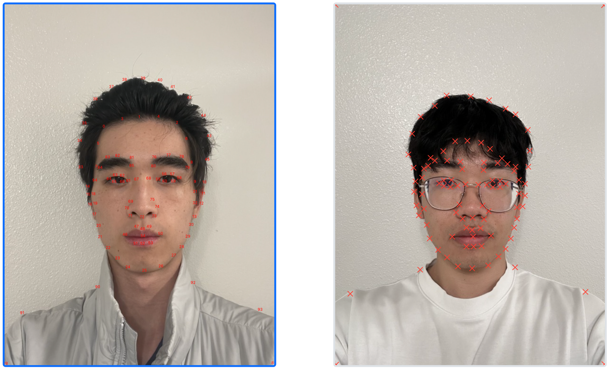

Introduction
This project explores how to smoothly morph between two images by warping the mesh of correspondence points of the two images and then cross-dissolving the colors. Through these two operations, the average face of a population can also be computed, as well as caricatures extrapolated from the average face.
Defining Correspondences
Approach
Corresponding points between the two images were selected using this correspondence tool. Then, scipy.spatial.Delaunay was used to triangulate each image, producing tri. The result of each triangulations was plotted using plt.triplot(pts[:, 0], pts[:, 1], tri.simplices).
Results
| Correspondence Points | Triangulations |
|---|---|
|  |
Computing the "Mid-way Face"
Approach
The average shape was calculated through a weighted, element-wise average between the correspondence points of the two images using mid_pts = (1.0 - warp_frac) * pts1 + warp_frac * pts2. For the mid-way face, warp_frac=0.5. Then, scipy.spatial.Delaunay was used to triangulate mid_pts, which produces a (N, 3) matrix tri of indices, where N is the number of triangles.
Using this triangulation, the processes for warping img1 and img2 are identical. For a given img with correspondence points pts, using tri to index pts (like pts[tri]) substitutes the indices in tri with their respective 2D coordinates and produces a (N, 3, 2) matrix. Let a = mid_pts[tri] and b = pts[tri]. After converting a and b to homogenous coordinates by concatenating a ones matrix, np.linalg.solve(a, b) is used to solve for all N inverse transformation matrices. These matrices transform a triangle in the average shape to the corresponding triangle in img.
Next, for each triangle in mid_pts, all the coordinates tri_pts within this triangle are generated using skimage.draw.polygon. These coordinates are multiplied by the inverse transform matrix inv associated with this triangle to produce a (K, 3) matrix inv_pts = np.matmul(tri_pts, inv_transform), where K is the number of coordinates within this triangle.
Finally, for each of the pixel coordinates in inv_pts, the final color of that pixel is queried from img using a custom bilinear interpolation function that interpolates between the colors of the four neighboring pixels.
Results
| Me | Andy |
|---|---|

|
| Mid-way Face |
|---|
Using griddata
I also tried using scipy.interpolate.griddata to perform the interpolation as an alternative to iterating over all the pixels in each triangle. However, this approach produced holes and weird artifacts in the final image, as shown below. I visualized the coverage of the polygon triangles for the mid-way shape and both source images and found no holes in any of the coverages. I also verified that the calculated inverse transformations accurately mapped between corresponding triangles. I suspect this is a floating point error in griddata when it tries to calculate the convex hull because using method='nearest', which does not depend on the convex hull, does not produce any holes. However, the resulting warp is jagged and looks far worse than the one produced using bilinear interpolation.
To fix this, I tried passing the entire image into griddata, but that made each function call take far too long to be practical. I also tried widening the source polygon region by a small scale factor, but that proved to be too complicated and messy due to edge cases where the widened polygon extends past the edge of the image.
In the end, I went with the naive approach of iterating over every pixel in the target triangle, which actually ended up being faster than the approach using griddata anyways (5.18s per frame vs 7.02s per frame).
The Morph Sequence
Approach
Following the weighted-average approach described in the previous section, img1 and img2 are both warped to a common intermediate shape decided by warp_frac. This time, warp_frac is not constant at 0.5. Instead, over the course of the video, warp_frac linearly increases from 0.0 to 1.0.
Now that both images have the same shape, their pixel color values are cross-dissolved using a simple weighted average determined by dissolve_frac to produce the final image result = (1 - dissolve_frac) * warped_img1 + dissolve_frac * warped_img2. Similarly, dissolve_frac also increases linearly from 0.0 to 1.0 over the course of the video.
Results
The "Mean face" of a Population
Approach
The average shape mid_pts of the population is calculated by elementwise-averaging the coordinates of corresponding triangles across all faces in the population. Then, using the same warping function above, every face in the population is warped to fit mid_pts. Lastly, the RGB values of every warped face are averaged together to form the final average face of the population.
Results
| Average Face | Me → Average Face | Average Face → Me |
|---|---|---|
Examples
Here are some examples of faces in the dataset warped to fit the shape of the average face:Caricatures: Extrapolating from the Mean
Approach
After computing the shape of the average face, extrapolation is accomplished using this simple formula: caricature = scale * (me - avg) + avg where scale > 1.0. This exaggerates any differences in shape between me and the average face, thus creating a caricature. Rearranging and grouping the terms in this formula actually shows that caricature = scale * me + (1 - scale) * avg. This is exactly the same weighted average formula used for warping between two images except now scale can be greater than 1.0! Thus, the same warping function described in previous parts is used to create the caricature below (warp_frac=1.75 and dissolve_frac=0.0).
Results
As shown below, the caricature emphasizes any differences in shape between my face and the average face. In my caricature, my eyes are smaller, eyebrows are more raised, nose is wider, and mouth is narrower.Bells and Whistles
Morphing Ethnicity
The following morphs were created with an image of the average white male found online. To only morph appearance, I used warp_frac=0.0 and dissolve_frac=0.5. This morphs the shape of the average white male image to the shape my face and cross dissolves the colors to change appearance without changing the shape of my face. To only morph shape, I used warp_frac=0.5 and dissolve_frac=0.0. This morphs the shape of my face towards that of the average white male but does not cross dissolve any colors, which preserves my original appearance.
For the morph of both appearance and shape, I used warp_frac=0.5 and dissolve_frac=0.5.
| Me | Average White Male |
|---|---|
| Appearance Only | Shape Only | Both |
|---|---|---|
| Video |
|---|